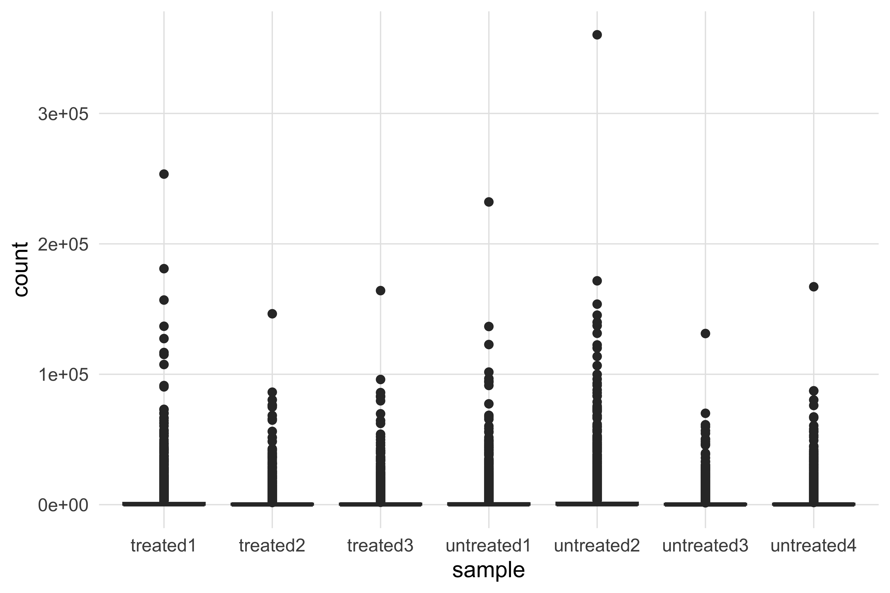
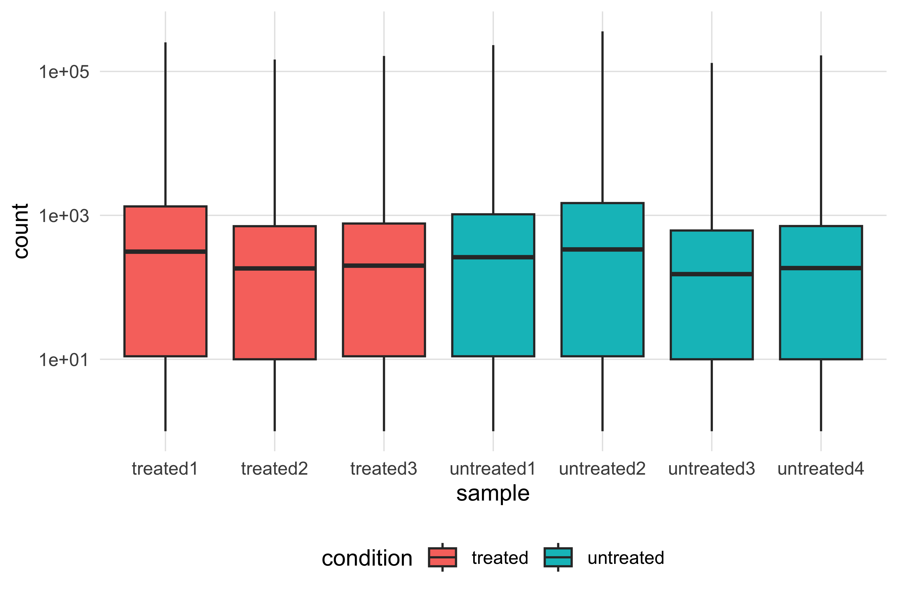
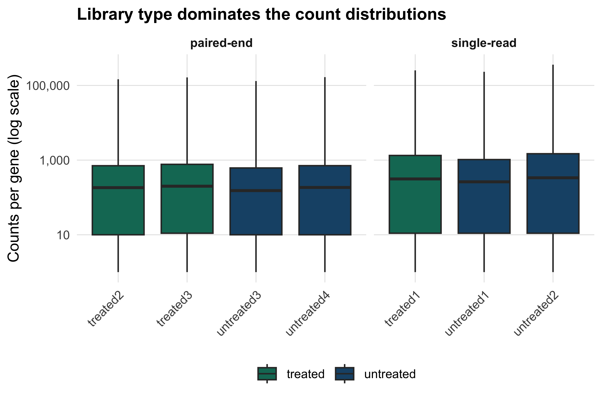
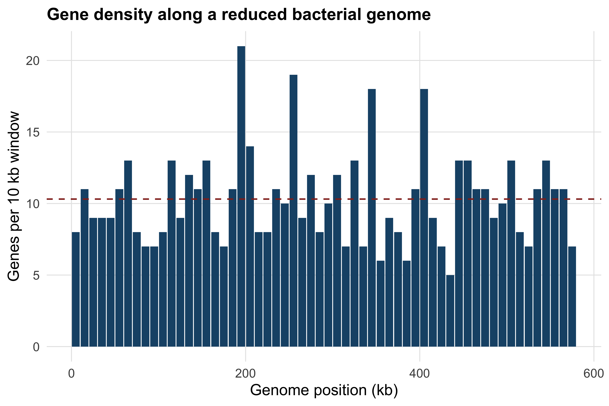
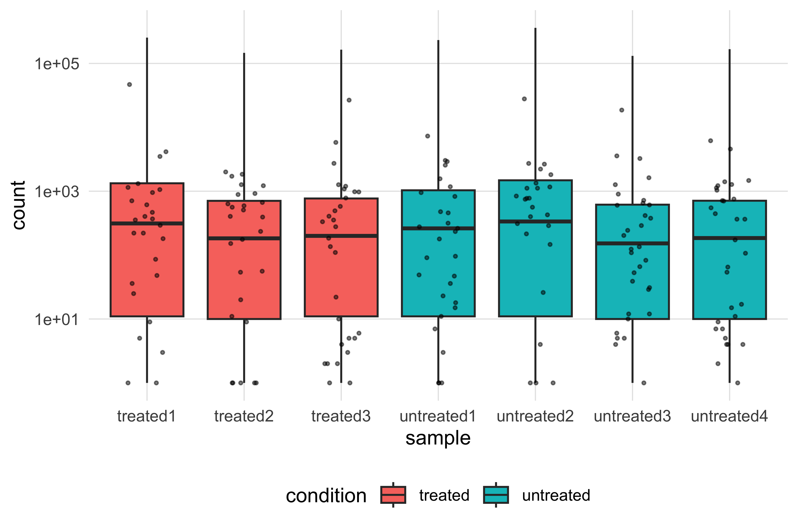

7 R and Bioconductor
After working through this chapter you will be able to
- explain where R’s design makes statistical and genomic work shorter than the equivalent Python, and where it does not
- predict the result of R’s recycling and coercion rules instead of discovering them in a wrong answer
- diagnose the three errors factors cause, and convert a factor to its labels safely
- subset a data frame in base R and with dplyr, and read both idioms in other people’s code
- reshape a count matrix between wide and long form, and build a ggplot2 figure one layer at a time
- construct
Biostrings,GRangesandSummarizedExperimentobjects from bundled data and say what each class guarantees - assemble a
SummarizedExperimentin which sample annotation cannot become detached from its counts
R was written by statisticians, for statistics, and it shows in every corner of the language. There is no scalar type: a single number is a vector of length one. Missing data has its own value, NA, which propagates through arithmetic instead of quietly becoming zero. A linear model, a t-test and a false discovery rate correction are in the base installation, not in a package. None of that is an accident, and none of it is how Python works. The consequence for bioinformatics is that a great deal of what you want to do with a count matrix, a table of variants or a set of genomic intervals is one line in R and a loop in most other languages.
The second reason to learn R is Bioconductor: a coordinated collection of more than two thousand packages, released twice a year as a tested set, built on shared data structures for sequences, genomic intervals and assay matrices. Almost every published RNA-seq, ChIP-seq, methylation and microarray analysis of the last twenty years passed through it. You cannot work in genomics for long without meeting a GRanges object or a SummarizedExperiment, and once you can read those two classes most Bioconductor documentation becomes intelligible.
This chapter uses five bundled datasets. The RNA interference experiment of Brooks et al. (2010) supplies a count matrix of 14,599 Drosophila genes across seven samples (data/expression/pasilla_gene_counts.tsv) and its sample annotation (data/expression/pasilla_sample_annotation.csv); these carry the data-handling, reshaping and plotting sections, and the SummarizedExperiment you build at the end is the object the RNA-seq chapter uses for its DESeq2 analysis. The Mycoplasmoides genitalium G37 genome (data/sequences/mycoplasma-genitalium-NC_000908.2.fasta) and its RefSeq annotation (data/annotation/mycoplasma-genitalium.gff) carry Biostrings and GRanges, and the eight p53 orthologues in data/proteins/p53-orthologs.fasta give a protein sequence set to work on.
The Python chapter covered some of this ground in another language, and this one does not repeat it. Where the two differ in how they think — about vectors, about missing values, about where metadata lives — the difference is the lesson.
7.1 Why R, and where it wins
R is an open implementation of the S language, which was designed at Bell Laboratories for interactive data analysis (R Core Team 2024). Three features of that design matter daily.
Everything is a vector. length(3.14) is 1. Arithmetic, comparison and most functions operate on whole vectors at once, so the loop you would write in another language is usually absent in R. That is not merely cosmetic: a loop you do not write is a loop whose index you cannot get wrong.
Statistics is in the language, not bolted on. t.test, lm, p.adjust, quantile and the full family of probability distributions ship with R. When an analysis reaches the point of needing a p-value, there is nothing to install.
Packages are a first-class concern. CRAN holds over twenty thousand packages, each required to pass automated checks on several platforms before release; Bioconductor adds a biological layer on top with its own, stricter, review and a twice-yearly coordinated release.
Where R loses is equally worth knowing. It is slower than Python for text processing and for explicit loops, it has no equivalent of Biopython’s parsers for the long tail of file formats, and its tooling for general software engineering is thinner. The honest division of labour is that pipelines and parsers tend to be written in Python and in shell, and the statistical analysis of what they produce tends to be written in R.
Every R chapter of this book opens with the same setup, which makes the bundled data reachable and sets the plotting style.
7.2 Vectors, vectorisation and recycling
Read the count matrix with base R first, because the base functions are what you will meet in older scripts and in package source code.
counts_df <- read.delim(book_data("expression", "pasilla_gene_counts.tsv"))
count_matrix <- as.matrix(counts_df[, -1])
rownames(count_matrix) <- counts_df$gene_id
dim(count_matrix)
#> [1] 14599 7
count_matrix[1:3, 1:4]
#> untreated1 untreated2 untreated3 untreated4
#> FBgn0000003 0 0 0 0
#> FBgn0000008 92 161 76 70
#> FBgn0000014 5 1 0 0read.delim returns a data frame; dropping the first column with [, -1] and calling as.matrix gives a numeric matrix, and the gene identifiers move from a column to the row names. A matrix holds one type of value, which is what allows colSums and friends to be fast.
A row of that matrix is a named numeric vector, and most of what you want to know about it is a single function call.
Vectorisation means an operation applies to every element without a loop. Comparison returns a logical vector, and logical vectors are how you select.
sum on a logical vector counts the TRUE values, because TRUE becomes 1 when a numeric answer is required. That is coercion, R’s rule for mixing types: a vector holds one type, so combining types silently promotes everything to the most general one, in the order logical → integer → double → character. c(1, 2, "three") is a character vector in which the 1 is now the text "1". A column of counts arriving as character because one spreadsheet cell said not done is this rule in action, and the symptom is arithmetic refusing to work on data that looks numeric.
Normalising counts to counts per million exposes the second rule, recycling: when two vectors of different lengths meet, R repeats the shorter one until it matches the longer.
Recycling is convenient when the short vector has length one — count_matrix / 1000 divides everything by 1,000 — and dangerous otherwise. Dividing the whole matrix by the vector of library sizes looks correct and is not.
wrong_cpm <- 1e6 * count_matrix / library_size
right_cpm <- 1e6 * t(t(count_matrix) / library_size)
round(wrong_cpm["FBgn0000008", ], 2)
#> untreated1 untreated2 untreated3 untreated4 treated1 treated2
#> 4.20 16.82 9.09 6.77 14.23 6.30
#> treated3
#> 3.75
round(right_cpm["FBgn0000008", ], 2)
#> untreated1 untreated2 untreated3 untreated4 treated1 treated2
#> 6.58 7.35 9.09 7.11 7.50 9.19
#> treated3
#> 6.77
round(colSums(right_cpm))
#> untreated1 untreated2 untreated3 untreated4 treated1 treated2
#> 1e+06 1e+06 1e+06 1e+06 1e+06 1e+06
#> treated3
#> 1e+06A matrix in R is a vector with a dimension attribute, filled column by column, so dividing it by a length-7 vector recycles that vector down the rows, not across the columns. Each count is divided by whichever library size happens to land on it. The result is numerically plausible — all seven values are small positive numbers of the right order of magnitude, and one of them, untreated3, is even correct by coincidence — which is exactly why this is a dangerous bug rather than an obvious one. Transposing twice, as right_cpm does, aligns the vector with the columns; the check that proves it is that every column of the corrected matrix now sums to exactly one million.
Missing values follow their own rule. NA is contagious: any arithmetic involving it returns NA, so that a missing measurement cannot be silently treated as zero.
The design decision is deliberate, and it is one of the places R is clearly better than a language in which a missing value becomes an empty string or a zero. If you want the mean of what you have, you must say so with na.rm = TRUE, and saying so is a decision recorded in the code.
7.3 Factors, and the trouble they cause
A factor is R’s type for a categorical variable: it stores the data as integer codes plus a table of levels, the permitted categories. Statistical functions need this — lm and t.test must know that treated and untreated are two levels of one variable rather than two arbitrary strings — and the level order sets the reference category, which decides the sign of every coefficient a model reports.
condition <- factor(c("untreated", "treated", "treated", "untreated"))
condition
#> [1] untreated treated treated untreated
#> Levels: treated untreated
levels(condition)
#> [1] "treated" "untreated"
as.integer(condition)
#> [1] 2 1 1 2The levels came out in alphabetical order, so treated is the reference and a model fitted on this variable would report changes relative to the treated samples — the opposite of what the experiment means. Set the order explicitly whenever it matters.
Three failure modes follow from the integer-plus-levels design, and all three appear in real analyses.
lane_counts <- factor(c("5", "2", "2", "2", "6", "2", "2"))
as.numeric(lane_counts)
#> [1] 2 1 1 1 3 1 1
as.numeric(as.character(lane_counts))
#> [1] 5 2 2 2 6 2 2
treated_only <- condition[condition == "treated"]
table(treated_only)
#> treated_only
#> untreated treated
#> 0 2
table(droplevels(treated_only))
#>
#> treated
#> 2The first trap is the serious one: as.numeric on a factor returns the internal codes, not the labels, so a column of lane counts converted this way becomes a different set of numbers with no error anywhere. The route through as.character is the only safe one. The second trap is that subsetting keeps levels that no longer occur, so table reports a category with zero members and ggplot2 draws an empty box for it; droplevels removes them. The third is that combining two factors with different levels works on the integer codes rather than the labels, so convert to character, combine, and re-factor.
Before R 4.0, read.csv turned every character column into a factor by default, and a decade of analyses carry bugs from it. The default is now stringsAsFactors = FALSE, so modern code gets character columns — but data read with older code, loaded from an .RData file, or returned by a package that still converts, may be factors. When a numeric column behaves strangely, check class() before anything else, and convert with as.numeric(as.character(x)), never as.numeric(x).
7.4 Data frames, tibbles and two ways to subset
A data frame is a list of equal-length vectors presented as a table, so each column has its own type. It is the structure almost all R analysis passes through. A tibble is the tidyverse’s data frame: the same thing with three behaviours changed, all of them to remove surprises (Wickham et al. 2019).
library(readr)
library(dplyr)
samples <- read_csv(book_data("expression", "pasilla_sample_annotation.csv"),
show_col_types = FALSE) |>
rename(lanes = `number of lanes`, exon_counts = `exon counts`) |>
mutate(sample = sub("fb$", "", file), .before = 1) |>
select(sample, condition, type, lanes, exon_counts)
samples
#> # A tibble: 7 x 5
#> sample condition type lanes exon_counts
#> <chr> <chr> <chr> <dbl> <dbl>
#> 1 treated1 treated single-read 5 15679615
#> 2 treated2 treated paired-end 2 15620018
#> 3 treated3 treated paired-end 2 12733865
#> 4 untreated1 untreated single-read 2 14924838
#> 5 untreated2 untreated single-read 6 20764558
#> 6 untreated3 untreated paired-end 2 10283129
#> 7 untreated4 untreated paired-end 2 11653031The sample names in the annotation file carry an fb suffix that the count matrix columns do not; sub strips it so the two tables can be joined. That mismatch is typical, and noticing it early is the difference between a join that works and a join that silently returns nothing.
Printing shows the first differences. A tibble reports its dimensions and the type of every column, and prints ten rows rather than every row. The deeper differences appear when you subset.
samples_df <- as.data.frame(samples)
class(samples_df[, "condition"]) # a data frame drops to a vector
#> [1] "character"
class(samples[, "condition"]) # a tibble stays a tibble
#> [1] "tbl_df" "tbl" "data.frame"
samples_df$cond[1:3] # partial matching: $ finds "condition"
#> [1] "treated" "treated" "treated"A data frame with one column selected returns a vector, which breaks any code downstream that expected a table; a tibble always returns a tibble, and samples$condition or samples[["condition"]] is how you ask for the vector. And $ on a data frame matches partially, so a typo such as samples_df$cond returns the condition column instead of NULL. On a tibble it returns NULL with a warning, which is the behaviour you want: a mistyped column name should be an error, not a silent substitution.
Base R and dplyr express the same selection differently, and you need to read both, because thirty years of published R code uses the first idiom.
# base R: rows by logical vector, columns by name, inside one [ ]
samples_df[samples_df$condition == "treated" & samples_df$lanes == 2,
c("sample", "type", "exon_counts")]
#> sample type exon_counts
#> 2 treated2 paired-end 15620018
#> 3 treated3 paired-end 12733865
# dplyr: one verb per operation, chained
samples |>
filter(condition == "treated", lanes == 2) |>
select(sample, type, exon_counts)
#> # A tibble: 2 x 3
#> sample type exon_counts
#> <chr> <chr> <dbl>
#> 1 treated2 paired-end 15620018
#> 2 treated3 paired-end 12733865The results are identical; the difference is where the complexity sits. Base R’s [ does two jobs at once and requires you to repeat the name of the data frame inside the condition, which is where typos hide. dplyr splits the work into verbs, evaluates column names inside the data, and reads left to right. For interactive analysis the second is easier to get right; for package code the first has the advantage of depending on nothing.
7.5 Verbs, pipes and tidy data
dplyr provides a small set of verbs that each do one thing: filter chooses rows, select chooses columns, mutate adds or changes columns, arrange sorts, summarise collapses, and group_by makes the verb after it work within groups. The native pipe |> passes the value on its left into the first argument of the call on its right, so a chain of verbs reads as a sentence.
samples |>
mutate(counts_per_lane = exon_counts / lanes) |>
group_by(condition, type) |>
summarise(n = n(), mean_per_lane = mean(counts_per_lane), .groups = "drop") |>
arrange(desc(mean_per_lane))
#> # A tibble: 4 x 4
#> condition type n mean_per_lane
#> <chr> <chr> <int> <dbl>
#> 1 treated paired-end 2 7088471.
#> 2 untreated paired-end 2 5484040
#> 3 untreated single-read 2 5461589.
#> 4 treated single-read 1 3135923Four groups, one line each: the design is unbalanced, with a single treated single-read library and two of everything else. That imbalance is the chapter’s recurring theme and it matters for the analysis in the RNA-seq chapter, because library type is partly confounded with condition.
R has two pipes. The magrittr pipe %>%, which the tidyverse introduced, is a function from a package and allows a . placeholder: x %>% f(y, .). The native pipe |> has been part of base R since version 4.1, needs no package, and always passes into the first argument. Use |> in new code — it works in a script with no libraries attached, and it is what current tidyverse documentation uses — and expect to meet %>% in everything written before about 2022.
Tidy data and pivoting
Data is tidy when each variable is a column, each observation is a row, and each type of observational unit is a table. The count matrix is not tidy: its seven columns are not seven variables but seven values of one variable, sample. Wide form is the right shape for matrix algebra and for every Bioconductor assay class; long form is the right shape for ggplot2 and for group_by. Converting between them is the most common single operation in a tidyverse analysis.
library(tidyr)
long_counts <- read_tsv(book_data("expression", "pasilla_gene_counts.tsv"),
show_col_types = FALSE) |>
pivot_longer(-gene_id, names_to = "sample", values_to = "count") |>
left_join(samples, by = "sample")
dim(long_counts)
#> [1] 102193 7
head(long_counts, 3)
#> # A tibble: 3 x 7
#> gene_id sample count condition type lanes exon_counts
#> <chr> <chr> <dbl> <chr> <chr> <dbl> <dbl>
#> 1 FBgn0000003 untreated1 0 untreated single-read 2 14924838
#> 2 FBgn0000003 untreated2 0 untreated single-read 6 20764558
#> 3 FBgn0000003 untreated3 0 untreated paired-end 2 10283129pivot_longer(-gene_id, ...) means “pivot every column except gene_id”, turning 14,599 rows by 7 columns into 102,193 rows of three. The left_join then attaches the annotation by matching the sample column in both tables — which only works because the fb suffix was stripped earlier.
With the data long, a per-sample summary is one grouped summarise.
library_summary <- long_counts |>
group_by(sample, condition, type) |>
summarise(library_size = sum(count), genes_detected = sum(count > 0),
.groups = "drop") |>
arrange(library_size)
library_summary
#> # A tibble: 7 x 5
#> sample condition type library_size genes_detected
#> <chr> <chr> <chr> <dbl> <int>
#> 1 untreated3 untreated paired-end 8358426 10202
#> 2 treated2 treated paired-end 9571826 10323
#> 3 untreated4 untreated paired-end 9841335 10281
#> 4 treated3 treated paired-end 10343856 10332
#> 5 untreated1 untreated single-read 13972512 10529
#> 6 treated1 treated single-read 18670279 11208
#> 7 untreated2 untreated single-read 21911438 11154The four paired-end libraries are the four smallest, between 8.4 and 10.3 million counts, and the three single-read libraries are the three largest, between 14.0 and 21.9 million. Library size and library type are not independent in this experiment, and neither is independent of condition. pivot_wider reverses the operation when a matrix is needed again, and running it on long_counts reproduces the original table exactly — a check worth making the first few times you pivot anything.
7.6 The grammar of graphics
ggplot2 is not a collection of plot types. It is an implementation of a grammar: a plot is a dataset, a mapping from variables to aesthetics (position, colour, shape, size), one or more geometries that draw the mapped data, scales that control how a variable becomes an aesthetic, optional facets that split the plot into panels, and a theme that governs everything carrying no data. Each of those is added with +, and a plot can be stored in a variable and extended later. Building one figure in stages is the fastest way to see what each layer does.
Start with the data and a mapping, and add the simplest geometry.
library(ggplot2)
expressed <- long_counts |> filter(count > 0)
counts_plot <- ggplot(expressed, aes(x = sample, y = count))
counts_plot + geom_boxplot()
Figure 7.1 is a useful failure. The boxes are flattened onto the axis and the only visible feature is a column of outliers, because gene counts run from 1 to over 300,000 and a linear axis gives almost all of its height to the few thousand genes above 50,000. Nothing about the comparison between samples is legible. The fault is not the geometry — a boxplot is the right summary here — but the scale.
Add a logarithmic scale, and map condition to the fill aesthetic so that the two groups are distinguishable.
scaled_plot <- counts_plot +
geom_boxplot(aes(fill = condition)) +
scale_y_log10()
scaled_plot
Figure 7.2 is the same data and the same geometry, with one scale changed, and it now shows a real pattern: the medians differ between samples by about a factor of two, and the differences do not line up with the colours. Treated and untreated samples are interleaved, which means the largest visible source of variation is not the treatment. Note also what the aesthetic mapping did — fill = condition was placed inside aes(), because the colour is determined by a variable. A fixed colour that carries no information goes outside aes(), as a plain argument.
The last stage adds facets, the book palette and labels. Faceting by library type is a hypothesis: if library preparation explains the pattern, the panels will be internally consistent.
final_plot <- scaled_plot +
facet_grid(. ~ type, scales = "free_x", space = "free_x") +
scale_fill_manual(values = book_palette[c(2, 1)]) +
scale_y_log10(labels = scales::label_comma()) +
labs(x = NULL, y = "Counts per gene (log scale)", fill = NULL,
title = "Library type dominates the count distributions") +
theme(axis.text.x = element_text(angle = 45, hjust = 1))
final_plot
Figure 7.3 answers the question. The paired-end libraries have medians near 150 to 200 counts and the single-read libraries near 260 to 340, and within each panel treated and untreated samples sit on top of one another. A difference between the panels that is larger than the difference between the colours is the visual signature of a batch effect, and it is why the differential expression model in the RNA-seq chapter includes library type as a term rather than ignoring it. Adding a second scale_y_log10() also demonstrates a detail of the grammar: when two scales for the same aesthetic are added, the later one replaces the earlier rather than combining with it.
Three habits make ggplot2 easier. Keep the data long, because every aesthetic must map to a column. Store the plot in an object and add to it, so that experiments cost one line. And remember that theme() controls only what carries no data — fonts, grid lines, legend position — so to change what a plot says you need a different aesthetic, geometry or scale, not a theme.
7.7 Iteration and functions
R’s answer to “do this to every column” is a family of functions that take a function as an argument. apply works over the rows or columns of a matrix, sapply and lapply over the elements of a list or vector, and vapply does what sapply does while requiring you to state the type of the result, which turns a class of silent failures into errors.
head(round(rowMeans(count_matrix), 2), 3)
#> FBgn0000003 FBgn0000008 FBgn0000014
#> 0.14 99.57 1.43
apply(count_matrix, 2, median)
#> untreated1 untreated2 untreated3 untreated4 treated1 treated2
#> 27 46 18 19 47 20
#> treated3
#> 22
vapply(as.data.frame(count_matrix), function(x) sum(x == 0), integer(1))
#> untreated1 untreated2 untreated3 untreated4 treated1 treated2
#> 4070 3445 4397 4318 3391 4276
#> treated3
#> 4267Prefer the specialised functions where they exist: rowMeans, colSums, rowSums and colMeans are implemented in C and are much faster than apply on a large matrix. Reach for apply only when there is no specialised version, as for median.
The purrr package covers the same ground with a consistent interface and type-stable variants — map_dbl always returns a double vector, map_int an integer vector, map a list — and a compact formula notation in which .x is the current element.
A real use of iteration: test every well-expressed gene for a difference between conditions. Filtering first is not optional — a gene seen a handful of times carries no information and costs multiple-testing power.
keep <- rowSums(count_matrix >= 10) >= 3
log_cpm <- log2(right_cpm[keep, ] + 1)
groups <- samples$condition[match(colnames(log_cpm), samples$sample)]
p_values <- apply(log_cpm, 1, function(gene) t.test(gene ~ groups)$p.value)
q_values <- p.adjust(p_values, method = "BH")
c(tested = length(p_values),
raw_below_0.05 = sum(p_values < 0.05),
bh_below_0.05 = sum(q_values < 0.05))
#> tested raw_below_0.05 bh_below_0.05
#> 8148 1547 195Of 14,599 genes, 8,148 pass the expression filter. Of those, 1,547 have an uncorrected p-value below 0.05 — but roughly 407 would be expected by chance alone at that threshold, so the raw count is close to uninterpretable. The Benjamini–Hochberg procedure (Benjamini and Hochberg 1995), one call to a base R function, controls the expected proportion of false discoveries among the genes called significant and leaves 195. The analysis is deliberately naive: a t-test on log counts per million ignores the mean–variance relationship of count data, which is what DESeq2 (Love, Huber, and Anders 2014) and edgeR (Robinson, McCarthy, and Smyth 2009) model, and the RNA-seq chapter redoes it properly. It is here because three lines took a 14,599-gene matrix from raw counts to a corrected result.
Writing functions
A function in R is a value like any other. The body’s last expression is the return value, arguments may have defaults, and defaults may refer to other arguments.
counts_per_million <- function(count_column, library_size = sum(count_column)) {
if (!is.numeric(count_column)) {
stop("count_column must be numeric", call. = FALSE)
}
1e6 * count_column / library_size
}
round(counts_per_million(count_matrix[, "untreated1"])[1:3], 3)
#> FBgn0000003 FBgn0000008 FBgn0000014
#> 0.000 6.584 0.358
tryCatch(counts_per_million(letters), error = function(e) conditionMessage(e))
#> [1] "count_column must be numeric"The input check is the part most often left out and the part that saves the most time. Without it, passing a character vector produces an error from deep inside the arithmetic, far from the mistake; with it, the message names the argument.
When non-standard evaluation bites
dplyr lets you write filter(samples, condition == "treated") without quoting condition, because the verbs capture the expression and evaluate it inside the data rather than in the calling environment. This is non-standard evaluation, and it is pleasant until you try to write a function around it.
summarise_by_broken <- function(data, group_column) {
data |>
group_by(group_column) |>
summarise(observations = n(), .groups = "drop")
}
tryCatch(summarise_by_broken(long_counts, condition),
error = function(e) conditionMessage(e))
#> [1] "Must group by variables found in `.data`.\nx Column `group_column` is not found."The error is exact: dplyr looked for a column literally called group_column. The fix is to embrace the argument with { }, which tells dplyr to substitute what the caller passed before evaluating.
summarise_by <- function(data, group_column) {
data |>
group_by({{ group_column }}) |>
summarise(observations = n(), total_counts = sum(count), .groups = "drop")
}
summarise_by(long_counts, condition)
#> # A tibble: 2 x 3
#> condition observations total_counts
#> <chr> <int> <dbl>
#> 1 treated 43797 38585961
#> 2 untreated 58396 54083711
summarise_by(long_counts, type)
#> # A tibble: 2 x 3
#> type observations total_counts
#> <chr> <int> <dbl>
#> 1 paired-end 58396 38115443
#> 2 single-read 43797 54554229One pair of braces turns a function that cannot work into one that works for any grouping column. This is the single most common point at which people who are fluent in interactive dplyr get stuck when they start writing functions, and the symptom — an error naming your own argument as a missing column — is distinctive enough to recognise immediately.
7.8 Bioconductor
Bioconductor began in 2001 with a practical problem: every microarray group was writing its own code to attach probe identifiers to measurements, and none of it was interoperable (Gentleman et al. 2004). The answer was to define shared classes and require packages to use them, so that the output of one package is the input of the next. Three commitments follow, and they explain most of what looks unusual about Bioconductor code.
Packages use S4 classes, a formal object system with declared slots and validity checking, rather than the looser S3 system of base R. You access parts of an object through accessor functions — assay(), colData(), seqnames() — rather than reaching into slots with $ or @. And the whole collection is released twice a year as a tested set, with every package checked against every other, which is why a Bioconductor version number is a meaningful statement about an analysis (Huber et al. 2015).
Installing with BiocManager
Bioconductor packages are not installed with install.packages. The BiocManager package resolves the correct package versions for your release.
install.packages("BiocManager")
BiocManager::install(c("Biostrings", "GenomicRanges", "rtracklayer",
"SummarizedExperiment"))
BiocManager::valid()Those commands reach CRAN and the Bioconductor repositories, so they are not run when this book is built. The output below was captured from a real run of BiocManager::version() and BiocManager::valid() in the environment this chapter was written in, abridged where the report lists individual packages.
[1] '3.20'
Bioconductor version '3.20'
* 17 packages out-of-date
* 0 packages too new
create a valid installation with
BiocManager::install(c(
"BH", "BiocParallel", "Biostrings", "GenomeInfoDb", "IRanges",
"MatrixGenerics", "RCurl", "SparseArray", "callr", "colorspace", "curl",
"edgeR", "lambda.r", "limma", "restfulr", "selectr", "tinytex"
), update = TRUE, ask = FALSE, force = TRUE)BiocManager::valid() is the command worth remembering: it reports any installed package that is out of step with your Bioconductor release, which is the usual cause of an error message that makes no sense.
A Bioconductor release pins a set of mutually tested package versions to one R version. Stating “Bioconductor 3.20 under R 4.4” in a methods section identifies the software far more precisely than a list of individual package versions, and BiocManager::version() returns it in one call. Annotation packages change between releases as the underlying databases are rebuilt, so a result can shift when only the annotation has moved.
Biostrings
Biostrings stores sequences in a compressed representation that holds a whole genome in a fraction of the memory a character vector would need, and provides the operations the alphabet implies (Lawrence et al. 2013). Attach the Bioconductor packages now; note that they mask a few base and dplyr names, which is why they are loaded after the tidyverse work is done.
suppressPackageStartupMessages({
library(Biostrings)
library(GenomicRanges)
library(rtracklayer)
library(SummarizedExperiment)
})
genome <- readDNAStringSet(book_data("sequences",
"mycoplasma-genitalium-NC_000908.2.fasta"))
genome
#> DNAStringSet object of length 1:
#> width seq names
#> [1] 580076 TAAGTTATTATTTAGTTAATA...CTTTAATACTAAAAAAATAC NC_000908.2 Mycop...letterFrequency(genome, c("G", "C", "A", "T"))
#> G C A T
#> [1,] 92306 91515 200544 195711
round(100 * letterFrequency(genome, "GC", as.prob = TRUE), 2)
#> G|C
#> [1,] 31.69
chromosome <- genome[[1]]
subseq(chromosome, 1, 48)
#> 48-letter DNAString object
#> seq: TAAGTTATTATTTAGTTAATACTTTTAACAATATTATTAAGGTATTTA
reverseComplement(subseq(chromosome, 1, 48))
#> 48-letter DNAString object
#> seq: TAAATACCTTAATAATATTGTTAAAAGTATTAACTAAATAATAACTTAA DNAStringSet is a set of sequences; [[ takes one out as a DNAString. The GC content of 31.69% is low even for a reduced bacterial genome, and it has a direct consequence for the codon usage and oligonucleotide composition you can measure in the same two lines.
head(sort(oligonucleotideFrequency(chromosome, 3), decreasing = TRUE), 5)
#> AAA TTT TTA TAA ATT
#> 34109 32295 22898 22558 20365
countPattern("TTTAAA", chromosome)
#> [1] 1706
length(matchPattern("GGAGG", chromosome))
#> [1] 139The five commonest trinucleotides are all A or T only, as a 31.7% GC genome requires. matchPattern returns the positions of every match of the Shine–Dalgarno-like GGAGG motif, not merely the count. Protein sequences use the parallel class.
orthologs <- readAAStringSet(book_data("proteins", "p53-orthologs.fasta"))
width(orthologs)
#> [1] 393 390 391 386 386 393 373 352
head(sort(alphabetFrequency(orthologs[[1]])[1:20], decreasing = TRUE), 4)
#> P S L E
#> 45 38 32 30The eight p53 orthologues range from 352 to 393 residues (Bateman et al. 2022), and the human protein’s commonest residues are proline, serine, glycine and alanine — consistent with the large intrinsically disordered regions at both ends of p53.
GRanges and genomic intervals
Half of genomics is interval arithmetic: which variants fall in which genes, which peaks overlap which promoters, how much of a genome is annotated. GenomicRanges provides GRanges, a vector of intervals each with a sequence name, start, end and strand, plus arbitrary metadata columns, and rtracklayer reads GFF3, GTF, BED and BigWig into it (Lawrence et al. 2013).
The file is the RefSeq annotation produced by NCBI’s prokaryotic pipeline (Tatusova et al. 2016). Keep the gene features and the three metadata columns worth carrying, then declare the sequence length, which is what lets GRanges refuse an interval running off the end of the chromosome.
genes <- annotation[annotation$type == "gene"]
mcols(genes) <- mcols(genes)[, c("locus_tag", "gene", "gene_biotype")]
seqlengths(genes) <- 580076
genes[1:3]
#> GRanges object with 3 ranges and 3 metadata columns:
#> seqnames ranges strand | locus_tag gene gene_biotype
#> <Rle> <IRanges> <Rle> | <character> <character> <character>
#> [1] NC_000908.2 686-1828 + | MG_RS00005 dnaN protein_coding
#> [2] NC_000908.2 1828-2760 + | MG_RS00010 <NA> protein_coding
#> [3] NC_000908.2 2845-4797 + | MG_RS00015 gyrB protein_coding
#> -------
#> seqinfo: 1 sequence from an unspecified genome
summary(width(genes))
#> Min. 1st Qu. Median Mean 3rd Qu. Max.
#> 74 442 838 1004 1309 5418Now a real overlap computation. In a genome this compact, adjacent genes are expected to abut and sometimes to overlap, because the intergenic regions have been eroded. findOverlaps answers the question directly, returning every pair of indices whose intervals share at least one base; keeping only pairs where the first index is smaller removes self-matches and the duplicate of each pair.
hits <- findOverlaps(genes, genes, ignore.strand = TRUE)
hits <- hits[queryHits(hits) < subjectHits(hits)]
overlap_width <- width(pintersect(genes[queryHits(hits)],
genes[subjectHits(hits)],
ignore.strand = TRUE))
length(hits)
#> [1] 189
length(unique(c(queryHits(hits), subjectHits(hits))))
#> [1] 300
summary(overlap_width)
#> Min. 1st Qu. Median Mean 3rd Qu. Max.
#> 1.0 4.0 10.0 13.1 17.0 113.0189 pairs of annotated genes overlap, involving 300 of the 546 genes — more than half the genome’s gene complement. The median overlap is 10 bp and the largest is 113 bp. An overlap of a few bases is the signature of translational coupling, where the stop codon of one gene and the start codon of the next share sequence in an arrangement such as ATGA, and it is a well-documented feature of reduced genomes. Without an interval class this would be a nested loop; here it is one call, backed by an interval tree, so it stays fast on a human genome with two million features.
Intervals also answer density questions. tileGenome cuts the chromosome into fixed windows and countOverlaps counts the features in each, which is the computation behind every coverage track you have ever looked at.
tiles <- tileGenome(seqlengths(genes), tilewidth = 10000,
cut.last.tile.in.chrom = TRUE)
tiles <- tiles[width(tiles) == 10000] # drop the short final window
tiles$n_genes <- countOverlaps(tiles, genes, ignore.strand = TRUE)
summary(tiles$n_genes)
#> Min. 1st Qu. Median Mean 3rd Qu. Max.
#> 5.0 8.0 10.0 10.3 12.0 21.0Figure 7.4 plots that count along the genome. Converting a Bioconductor object for ggplot2 is a standard move: as.data.frame on a GRanges gives columns for seqnames, start, end, width, strand and every metadata column.
gene_density <- as.data.frame(tiles) |>
dplyr::mutate(midpoint_kb = (start + end) / 2000)
ggplot(gene_density, aes(x = midpoint_kb, y = n_genes)) +
geom_col(width = 9, fill = book_palette[1]) +
geom_hline(yintercept = mean(gene_density$n_genes),
linetype = "dashed", colour = book_palette[4]) +
labs(x = "Genome position (kb)", y = "Genes per 10 kb window",
title = "Gene density along a reduced bacterial genome")
Density varies from five to 21 genes per window around a mean of 10.3, and the variation is almost entirely a matter of gene length rather than of gene-free sequence: the sparsest window holds the two RNA polymerase subunit genes, which between them occupy 8 kb of the 10 kb, while the densest holds 21 protein-coding genes averaging 522 bp. A density track answers the question “how many features per window”, which is not the question “how much of this region is functional”.
SummarizedExperiment
A quantitative experiment is three things that must stay aligned: a matrix of measurements, a table describing the columns, and a table describing the rows. Keeping them in three separate variables works until something reorders one of them, at which point every result is wrong and nothing errors. SummarizedExperiment is the class that makes that impossible (Huber et al. 2015).
The failure it prevents is worth seeing first. The annotation table lists the samples in a different order from the count matrix columns.
samples$sample
#> [1] "treated1" "treated2" "treated3" "untreated1" "untreated2"
#> [6] "untreated3" "untreated4"
colnames(count_matrix)
#> [1] "untreated1" "untreated2" "untreated3" "untreated4" "treated1"
#> [6] "treated2" "treated3"naive <- data.frame(sample = colnames(count_matrix),
condition = samples$condition)
naive
#> sample condition
#> 1 untreated1 treated
#> 2 untreated2 treated
#> 3 untreated3 treated
#> 4 untreated4 untreated
#> 5 treated1 untreated
#> 6 treated2 untreated
#> 7 treated3 untreatedSix of the seven labels in that table are wrong: three untreated samples are called treated and three treated samples untreated, because a character vector was pasted beside a matrix on the assumption that both were in the same order. A differential expression analysis built on it would run to completion, produce a volcano plot, and be meaningless. It is the commonest serious bug in expression analysis, and no diagnostic plot reveals it.
Build the object properly. The sample table is reordered by name to match the matrix columns, and the row annotation is computed from the matrix itself.
sample_table <- samples |>
tibble::column_to_rownames("sample") |>
dplyr::mutate(condition = factor(condition, levels = c("untreated", "treated")),
type = factor(type))
sample_table <- sample_table[colnames(count_matrix), ]
gene_table <- DataFrame(total_count = rowSums(count_matrix),
detected_in = rowSums(count_matrix > 0),
row.names = rownames(count_matrix))
storage.mode(count_matrix) <- "integer"
pasilla_se <- SummarizedExperiment(assays = list(counts = count_matrix),
colData = sample_table,
rowData = gene_table)
pasilla_se
#> class: SummarizedExperiment
#> dim: 14599 7
#> metadata(0):
#> assays(1): counts
#> rownames(14599): FBgn0000003 FBgn0000008 ... FBgn0261574
#> FBgn0261575
#> rowData names(2): total_count detected_in
#> colnames(7): untreated1 untreated2 ... treated2 treated3
#> colData names(4): condition type lanes exon_countsThe printed summary is the anatomy of the class. dim gives features by samples, 14,599 by 7. assays lists the matrices — here one, named counts, and a second could hold normalised values on the same grid. rowData holds one row per gene, colData one row per sample, and metadata is a free-form list for provenance. The accessors return each part.
assay(pasilla_se, "counts")[1:3, 1:4]
#> untreated1 untreated2 untreated3 untreated4
#> FBgn0000003 0 0 0 0
#> FBgn0000008 92 161 76 70
#> FBgn0000014 5 1 0 0
colData(pasilla_se)
#> DataFrame with 7 rows and 4 columns
#> condition type lanes exon_counts
#> <factor> <factor> <numeric> <numeric>
#> untreated1 untreated single-read 2 14924838
#> untreated2 untreated single-read 6 20764558
#> untreated3 untreated paired-end 2 10283129
#> untreated4 untreated paired-end 2 11653031
#> treated1 treated single-read 5 15679615
#> treated2 treated paired-end 2 15620018
#> treated3 treated paired-end 2 12733865
head(rowData(pasilla_se), 3)
#> DataFrame with 3 rows and 2 columns
#> total_count detected_in
#> <numeric> <numeric>
#> FBgn0000003 1 1
#> FBgn0000008 697 7
#> FBgn0000014 10 3The guarantee is that the object cannot be built wrong. Passing sample annotation whose row names do not match the matrix columns is refused outright, and so is a table with the wrong number of rows.
shuffled <- sample_table[c(3, 1, 2, 5, 4, 7, 6), ]
tryCatch(SummarizedExperiment(assays = list(counts = count_matrix),
colData = shuffled),
error = function(e) conditionMessage(e))
#> [1] "the rownames and colnames of the supplied assay(s) must be NULL or\n identical to those of the SummarizedExperiment object (or\n derivative) to construct"
tryCatch(SummarizedExperiment(assays = list(counts = count_matrix),
colData = sample_table[1:6, ]),
error = function(e) conditionMessage(e))
#> [1] "invalid class \"SummarizedExperiment\" object: \n nb of cols in 'assay' (7) must equal nb of rows in 'colData' (6)"The order of columns in a matrix is an accident of how a file was written. Never rely on it. Match sample annotation to measurements by name — sample_table[colnames(count_matrix), ] — and put both in one object so the question cannot arise again. It prevents a class of error that no plot will reveal and no reviewer will catch.
From then on the object behaves like a two-dimensional array in which everything moves together. Subsetting rows filters the gene annotation; subsetting columns filters the sample annotation; and $ reaches into colData directly.
expressed_se <- pasilla_se[rowData(pasilla_se)$detected_in >= 3, ]
paired_se <- expressed_se[, expressed_se$type == "paired-end"]
dim(expressed_se)
#> [1] 10948 7
dim(paired_se)
#> [1] 10948 4
as.character(paired_se$condition)
#> [1] "untreated" "untreated" "treated" "treated"assay(pasilla_se, "cpm") <- 1e6 * t(t(assay(pasilla_se, "counts")) /
colSums(assay(pasilla_se, "counts")))
metadata(pasilla_se) <- list(
source = "Brooks et al. 2011, GEO GSE18508",
counted_with = "HTSeq, gene level",
built_in = "Chapter 7 of Practical Approach to Learning Bioinformatics"
)
assayNames(pasilla_se)
#> [1] "counts" "cpm"
round(assay(pasilla_se, "cpm")["FBgn0000008", ], 2)
#> untreated1 untreated2 untreated3 untreated4 treated1 treated2
#> 6.58 7.35 9.09 7.11 7.50 9.19
#> treated3
#> 6.77A second assay sits on the same grid as the first, so a gene selected from one is the same gene in the other. The counts themselves were produced by counting reads per gene with HTSeq (Anders, Pyl, and Huber 2014), which is the kind of fact the metadata slot exists to carry. Saving the object with saveRDS writes matrices, both annotation tables and the metadata to one file, and this is the object the RNA-seq chapter loads and hands to DESeq2 — where DESeqDataSet is simply a SummarizedExperiment with a design formula attached, which is why the hand-over needs no conversion at all. The same holds for most of Bioconductor: limma (Ritchie et al. 2015) and edgeR accept or return the same structure, and a class understood once is understood everywhere.
7.9 Reproducible reporting
Everything in this chapter was produced by a document holding both the prose and the code, rendered by Quarto with the knitr engine (Xie 2016). The idea is Knuth’s literate programming, inverted for data analysis (Knuth 1984): the figures and the numbers in the text cannot disagree with the analysis, because they are generated from it every time the document is built.
A Quarto document is Markdown with executable chunks. Each chunk has options set in #| comment lines: a label for cross-referencing, a caption, whether to show the code, whether to run it.
::: {.cell layout-align="center"}
```{.r .cell-code}
ggplot(gene_density, aes(midpoint_kb, n_genes)) + geom_col()
```
::: {.cell-output-display}
{#fig-07-density-example fig-align='center' width=90%}
:::
:::Rendering with quarto render chapter.qmd runs every chunk in a fresh R session, in document order, and fails if any of them fails. That last property is the one that matters: a document that renders is a document whose code runs from a clean start, which is a guarantee a notebook cannot make.
The remaining piece is a record of the software. sessionInfo() reports the R version, the platform and the version of every attached package, and belongs at the end of any analysis document.
session <- sessionInfo()
session$R.version$version.string
#> [1] "R version 4.4.3 (2025-02-28)"
head(vapply(session$otherPkgs, function(pkg) pkg$Version, character(1)), 6)
#> SummarizedExperiment Biobase MatrixGenerics
#> "1.36.0" "2.66.0" "1.18.0"
#> matrixStats rtracklayer GenomicRanges
#> "1.5.0" "1.66.0" "1.58.0"Printing sessionInfo() on its own gives the full report — operating system, locale and loaded-but-not-attached packages — tedious to read and invaluable when an analysis stops reproducing. Pair it with a pinned environment file, as described in the Unix chapter, so the versions are not merely recorded but restorable (Sandve et al. 2013).
7.10 Summary
- R has no scalars. Operations apply to whole vectors, which removes most loops and, with them, most index errors.
- Recycling repeats the shorter operand silently. On a matrix it recycles down the columns, so dividing a count matrix by a vector of library sizes gives a plausible, wrong answer.
- Coercion promotes mixed types to the most general one, and a factor is integer codes plus labels: a numeric column that will not do arithmetic is almost always character or factor, and only
as.numeric(as.character(x))recovers a factor’s labels. - Tibbles differ from data frames in the ways that matter for safety: no partial matching, no dropping to a vector, no silent factor conversion.
- Base R subsetting and dplyr verbs express the same operations. Write the second; be able to read the first.
- Tidy data has one variable per column, which is the shape
ggplot2andgroup_byrequire, and the opposite of the shape Bioconductor assays require.pivot_longerandpivot_widermove between them. - A ggplot is data, aesthetics, geometries, scales, facets and a theme. When a plot is unreadable, change the scale before the geometry.
- Bioconductor’s value is its shared classes.
Biostringsfor sequences,GRangesfor intervals andSummarizedExperimentfor assay matrices cover most of what a genomics analysis needs to hold. - Keeping counts, sample annotation and feature annotation in one
SummarizedExperimentmakes the commonest serious bug in expression analysis — a mismatch between samples and their labels — impossible to commit. - A rendered Quarto document plus
sessionInfo()is a result that can be rebuilt. A result that cannot be rebuilt is a claim.
7.11 Exercises
- Predict, before running it, what
c(TRUE, 2L, 3.5, "four")returns and whatclass()reports for it. Then check. - Create the factor
factor(c("10", "20", "30"))and convert it to the numbers 10, 20 and 30. Explain in one sentence whatas.numeric()alone returns and why. - Using
samples, write one dplyr pipeline that returns the sample name, condition and exon counts for every paired-end library, sorted from largest to smallest. Then write the same selection in base R. - Compute the median counts per million of each sample from
right_cpm, and say which library type has the higher median. Why is this not evidence of a biological difference? - Add a
geom_jitter()layer of 200 randomly chosen genes on top of Figure 7.2. What does the layer order tell you about howggplot2draws a plot? - Using
matchPattern, find every occurrence of the start codonATGon the forward strand of the M. genitalium chromosome, and compare the count with the 524 annotated coding sequences. Explain the discrepancy. - Build a
GRangesof the transfer RNA genes only (gene_biotype == "tRNA"), and usedistanceToNearestto find how far each one lies from the nearest protein-coding gene. Report the median distance. - Write a function
filter_by_detection(se, min_samples)that returns aSummarizedExperimentcontaining only genes detected in at leastmin_samplessamples, and show that the returned object’scolDatais unchanged. - The
pasilla_seobject contains one treated single-read library and two treated paired-end libraries. Usingtable()oncolData, show the design, and explain in two or three sentences why this makes the effect of condition and the effect of library type partly inseparable.
7.12 Solutions
1. Everything is coerced to character, because character is the most general of the four types present.
2. as.numeric() alone returns 1, 2, 3 — the internal integer codes of the three levels, which happen to be in the same order as the labels here and so look almost right. The safe route converts to character first.
sizes <- factor(c("10", "20", "30"))
as.numeric(sizes)
#> [1] 1 2 3
as.numeric(as.character(sizes))
#> [1] 10 20 303.
samples |>
filter(type == "paired-end") |>
select(sample, condition, exon_counts) |>
arrange(desc(exon_counts))
#> # A tibble: 4 x 3
#> sample condition exon_counts
#> <chr> <chr> <dbl>
#> 1 treated2 treated 15620018
#> 2 treated3 treated 12733865
#> 3 untreated4 untreated 11653031
#> 4 untreated3 untreated 10283129
samples_df[order(-samples_df$exon_counts), ][
samples_df$type[order(-samples_df$exon_counts)] == "paired-end",
c("sample", "condition", "exon_counts")]
#> sample condition exon_counts
#> 2 treated2 treated 15620018
#> 3 treated3 treated 12733865
#> 7 untreated4 untreated 11653031
#> 6 untreated3 untreated 10283129The base R version needs the ordering applied twice, once to the rows and once to the vector used in the condition, which is a fair illustration of why the verb form is easier to get right.
4. The single-read libraries have the higher median. This is a property of library preparation and sequencing depth, not of biology: counts per million corrects for total depth but not for the different distribution of reads across genes that paired-end and single-read protocols produce, and the two protocols are not randomly assigned to conditions in this experiment.
median_cpm <- apply(right_cpm, 2, median)
data.frame(median_cpm = round(median_cpm, 3),
type = samples$type[match(names(median_cpm), samples$sample)])
#> median_cpm type
#> untreated1 1.932 single-read
#> untreated2 2.099 single-read
#> untreated3 2.154 paired-end
#> untreated4 1.931 paired-end
#> treated1 2.517 single-read
#> treated2 2.089 paired-end
#> treated3 2.127 paired-end5. The jittered points are drawn on top of the boxes, because layers are drawn in the order they are added. Adding geom_jitter() before geom_boxplot() would hide the points behind the boxes.
set.seed(20250101)
sampled_genes <- dplyr::slice_sample(expressed, n = 200)
scaled_plot +
geom_jitter(data = sampled_genes, width = 0.2, size = 0.6, alpha = 0.5)
6. There are far more ATG occurrences than coding sequences, because most are internal codons, out of frame, or in the reverse-strand genes, which this search does not see at all.
atg_hits <- matchPattern("ATG", chromosome)
c(atg_occurrences = length(atg_hits), annotated_cds = 524)
#> atg_occurrences annotated_cds
#> 9020 524Gene finding needs a model of reading frames, ribosome binding sites and codon statistics, which is what Prodigal and the NCBI pipeline provide; counting start codons is not even a first approximation.
7.
trnas <- genes[genes$gene_biotype == "tRNA"]
coding <- genes[genes$gene_biotype == "protein_coding"]
nearest_hits <- distanceToNearest(trnas, coding, ignore.strand = TRUE)
length(trnas)
#> [1] 36
summary(mcols(nearest_hits)$distance)
#> Min. 1st Qu. Median Mean 3rd Qu. Max.
#> 0.0 35.8 102.5 135.1 225.5 390.0The median distance is small — a few tens of base pairs — which is another expression of the compactness seen in Figure 7.4.
8.
filter_by_detection <- function(se, min_samples) {
stopifnot(is(se, "SummarizedExperiment"), min_samples >= 0)
detected <- rowSums(assay(se, "counts") > 0)
se[detected >= min_samples, ]
}
filtered <- filter_by_detection(pasilla_se, min_samples = 5)
dim(filtered)
#> [1] 10044 7
identical(colData(filtered), colData(pasilla_se))
#> [1] TRUEidentical returning TRUE is the point: subsetting rows cannot disturb the sample annotation, because the subsetting method is defined on the whole object rather than on the matrix.
9.
The design is unbalanced: one treated single-read library against two untreated, and two treated paired-end against two untreated. Because every cell of the table is occupied, library type can be included as a term in a model and its effect estimated — the design is not fully confounded. But with one sample in the smallest cell, the estimate of the single-read effect in treated samples rests on a single library, so a technical oddity in that one library is indistinguishable from a treatment effect specific to single-read preparation. A balanced design with equal numbers in all four cells would have cost nothing extra and removed the ambiguity.
7.13 Further reading
- Wickham et al. (2019) is the paper that introduced the tidyverse as a coherent set; read it for the design principles that explain why the verbs are shaped as they are.
- Gentleman et al. (2004) is the original Bioconductor paper and is still the clearest statement of why shared classes, rather than shared functions, were the right thing to standardise.
-
Huber et al. (2015) describes the modern Bioconductor infrastructure, including
SummarizedExperiment, and is the reference to cite when you use the class. -
Lawrence et al. (2013) sets out the range-based classes and the algorithms behind
findOverlaps; worth reading before you write any interval arithmetic of your own. - Love, Huber, and Anders (2014) is the DESeq2 paper, and its methods section explains why the naive t-test in Section 7.7 is the wrong model for count data.
-
Xie (2016) documents
knitr, the engine that executes the chunks in this book; its chapter on chunk options answers most questions about controlling output. - Yu et al. (2012) is a well-built Bioconductor package to read as code: it takes a gene list and returns an enrichment result, using the shared classes throughout.
-
Cock et al. (2009) is the Biopython reference, worth comparing with
Biostrings: the same operations, a different design, and an illustration of how much of a library’s shape follows from its host language.